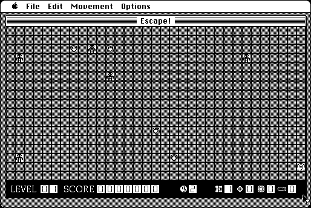

Download
Escape-2.1.zip (246K) Escape! 2.1 repackaged into a zipped hfs disk image and checksum file. The disk image can be mounted with Mini vMac.
Escape-2.1.sea.hqx (360K) Escape! 2.1 in the original format.
copyright: John V. Holder
mod date: Jun 19, 1996
license: shareware
official url :
Escape! Description
"similar to an old computer game called Daleks, though there's lots more goodies in this game!".

If you find these downloads useful, please consider helping the Gryphel Project, which hosts them.
Here are the md5 checksums for the downloads, signed with Gryphel Key 5:
--------- GRY SIGNED TEXT --------- 7c83eaa2fa056ee054a982fca3b8315d Escape-2.1.zip d6ef6da3af38d140dc2834e8acd86290 Escape-2.1.sea.hqx ------- BEGIN GRY SIGNATURE ------- Gry/4Xa8CFcUzxdN/BXrRHQJejztqHl3OW6hGLXCdPcthDKTYQDvwa3y52yJC31z omhXf+sVNjOILguwSz6oZ7bMVtJYX5+hPDbT4OlnKtbYzpEXeEBpVvMKIG48pn1e NLMgnGpcRdDj5AXUmj3N1A1FvjYSgIGzym15soff+ozqx95w383SlaNUTExWZzwZ -------- END GRY SIGNATURE --------